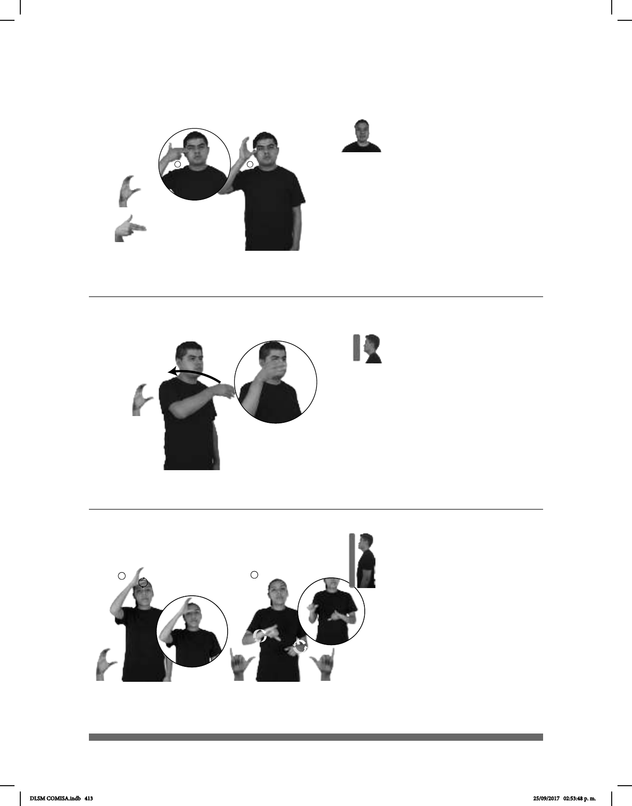

413
(C-53)
1
2
(C-52)
CHINA HABER MUCHAS PERSONAS
En China hay sobrepoblación.
CIELO NUBLADO
El cielo está nublado.
Seña: SM
Seña que pasa de
La palma inicia hacia
la izquierda y termina hacia adentro.
Inicia con los dedos índice
y medio sobre la sien y termina con el
dedo pulgar sobre la sien.
El antebrazo gira y
cambia la orientación de la mano,
pasa de mostrar el lateral a mostrar
el dorso.
País ubicado en Asia
Oriental cuya capital es Pekín.
Seña: SM
C.1
Del hombro a la cara
del lado izquierdo al lado derecho.
Palma hacia la
izquierda.
El brazo se mueve
formando un arco.
ust. m. Espacio que
se ve desde la tierra hacia arriba,
de color azul cuando es de día y no
hay nubes, y negro por la noche, en
donde se localizan el sol, la luna y
las estrellas.
1
2
Seña: SC: I. SM; II.SB
I. C.1; II. MD y MB
I. Palma hacia la izquierda; II.
MD y MB palmas oblicuas hacia abajo y
hacia fuera.
I. A la altura de la frente; II. MD
y MB a la altura del abdomen.
I. La mano se mueve for-
mando círculos; II. MD y MB se mueven
formando círculos alternadamente.
sust. f. Actividad mediante la
cual el ser humano produceconocimientos,
explicaciones y predicciones acerca de
algunos fenómenos, empleando
generalmente la observación y la
experimentación.
(C-54)
MEDICINA CIENCIA
La medicina es una ciencia.
DLSM COMISA.indb 413 25/09/2017 02:53:48 p. m.